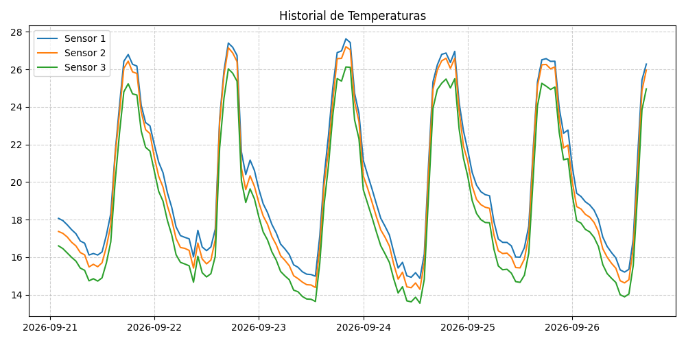
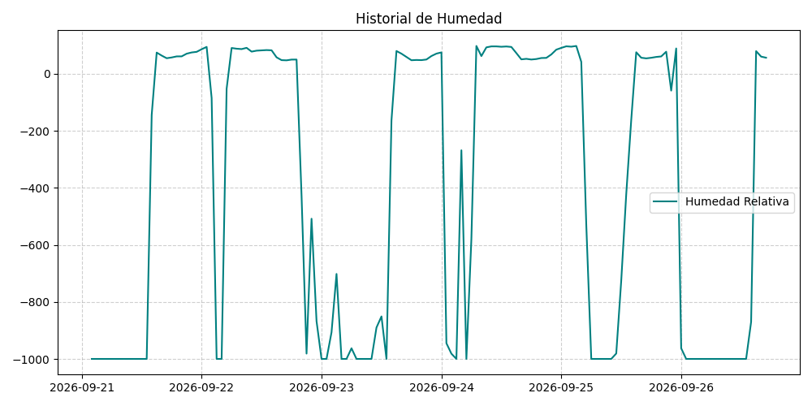

Última actualización: 2026-09-26 17:27:13 Estaciones: Zona Tláhuac - Chalco
Como analista de hardware IoT, he procesado el lote de datos correspondiente al periodo analizado (septiembre de 2026). A continuación, presento el informe con los hallazgos solicitados:
temp_sensor3 a las 13:00 UTC (y valores sostenidos bajos alrededor de los 13.7 °C - 15 °C durante gran parte de su ciclo diurno).Los picos máximos de radiación (Visible, Infrarroja y UV) se concentran consistentemente en la franja vespertina, específicamente entre las 17:00 UTC y las 19:00 UTC.
* Valor récord registrado: A las 18:00 UTC, donde la radiación infrarroja (radiacion_ir) alcanzó hasta 7,315.93 W/m² y la radiación UV llegó a un pico de 3.00.
Se detectaron anomalías críticas y fallas intermitentes en la telemetría:
* Falla Crítica en Humedad (Sensor de Humedad / Nodo I2C): El registro presenta múltiples valores anómalos imposibles como -999.9 (código típico de búfer vacío o timeout de lectura) y lecturas negativas extremas (ej. -981.26, -867.44, -144.58). Esto indica un fallo frecuente de comunicación en el sensor de humedad o corrupción en la trama de datos durante las transmisiones nocturnas y madrugadas.
* Deriva térmica: Los sensores muestran consistencia entre sí (sensor1, sensor2, sensor3), descartando una falla física de calibración total en las sondas de temperatura, limitando los errores térmicos a los saltos propios del ruido ambiental o errores de lectura en el conversor ADC.

